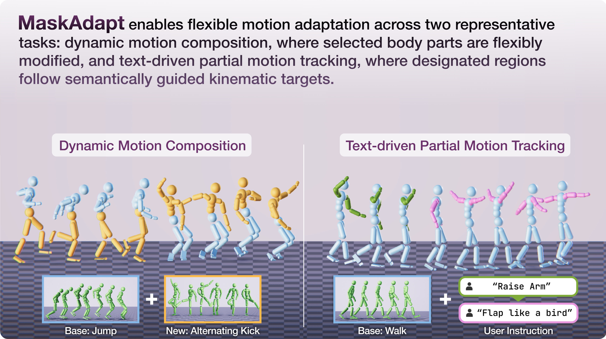
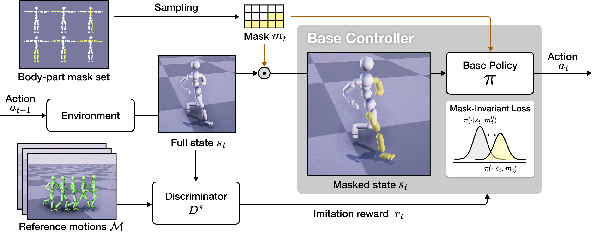
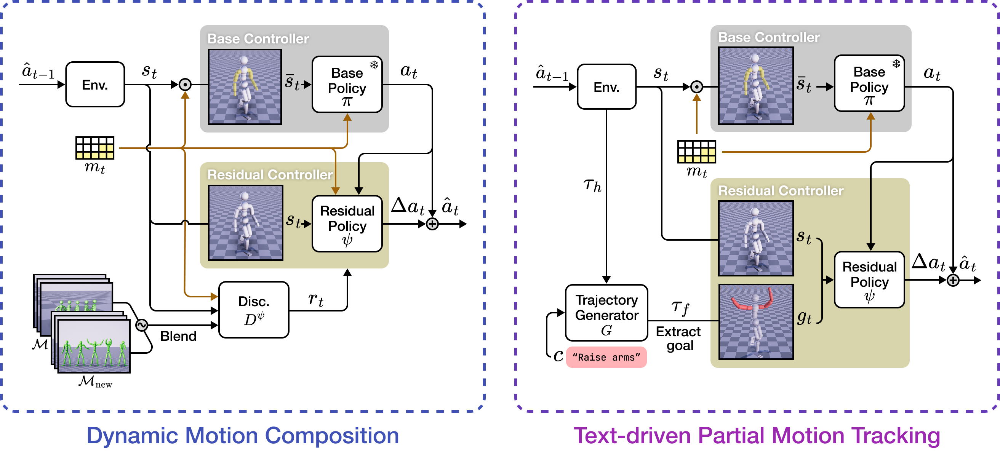

We present MaskAdapt, a framework for flexible motion adaptation in physics-based humanoid control. The framework follows a two-stage residual learning paradigm. In the first stage, we train a mask-invariant base policy using stochastic body-part masking and a regularization term that enforces consistent action distributions across masking conditions. This yields a robust motion prior that remains stable under missing observations, anticipating later adaptation in those regions. In the second stage, a residual policy is trained atop the frozen base controller to modify only the targeted body parts while preserving the original behaviors elsewhere. We demonstrate the versatility of this design through two applications: (i) motion composition, where varying masks enable multi-part adaptation within a single sequence, and (ii) text-driven partial goal tracking, where designated body parts follow kinematic targets provided by a pre-trained text-conditioned autoregressive motion generator. Through experiments, MaskAdapt demonstrates strong robustness and adaptability, producing diverse behaviors under masked observations and delivering superior targeted motion adaptation compared to prior work.
Our framework follows a two-stage residual learning paradigm: the base controller first learns a robust action prior, and a residual controller is then trained on top of the frozen base policy to produce residual actions that adapt the base behavior.
Key Challenges
To tackle these challenges, we introduce MaskAdapt, a framework that learns a robust motion prior that enables flexible residual adaptation.
Stage 1: Learning a Mask-Invariant Motion Prior
The base policy is trained with stochastic body-part masking and regularized using the mask-invariant loss to maintain consistent actions across masking conditions. This encourages a robust motion prior that remains stable under missing observations, anticipating later adaptation in those regions.

Stage 2: Learning Flexible Motion Adaptation
The residual policy enables flexible motion adaptation, which we evaluate through two representative tasks: Dynamic Motion Composition, where varying masks allow multi-part adaptation within a single sequence, and Text-Driven Partial Motion Tracking, where designated body parts follow kinematic targets generated by a pre-trained text-conditioned autoregressive diffusion model.

Here, we compare base policies trained with and without the mask-invariant loss.
| ❌ Without Mask-Invariant Loss | ✅ With Mask-Invariant Loss |
|---|---|
Without the MI loss, the policy collapses into highly repetitive, looping motions.
With the MI loss, however, the policy preserves motion diversity even under severe occlusion (e.g., arms or legs).
| ❌ Without Mask-Invariant Loss | ✅ With Mask-Invariant Loss |
|---|---|
We observe the similar effect when deployed on the Unitree G1 humanoid robot, confirming that our approach learns a robust motion prior even when major body parts (e.g., the upper/lower body) are occluded.
The MI loss effectively prevents collapse under masking and enables the policy to retain dataset-level diversity comparable to the unmasked baseline (AMP), qualifying it as a robust motion prior.
Ours
AMP
Here, we showcase the qualitative results of the residual adaptation stage across two representative tasks.
Jump + Alternating Kick
Locomotion + Rotate Arms
Aim + Sneak
"Raise right arm"
"Flap like a bird"
"Cross arms"
Here, we showcase a wide range of goal-driven tasks (a-c) and complex scenarios (d-e) through motion composition.
(a) Target Location Task
(b) Strike Task
(c) Heading Task
(d) Multi-Motion Composition
(e) Adaptation for Real Humanoid Robot (Unitree G1)
We compare our method against Composite Motion Learning (CML) on both motion composition and partial tracking tasks.
Jump + Alternating Kick
Locomotion + Rotate Arms
Aim + Sneak
"Dribble"
"Raise arms"
"Wave hands"
@article{park2026maskadapt,
title={MaskAdapt: Learning Flexible Motion Adaptation via Mask-Invariant Prior for Physics-Based Characters},
author={Park, Soomin and Lee, Eunseong and Lee, Kwang Bin and Lee, Sung-Hee},
journal={arXiv preprint arxiv:2603.29272},
year={2026}
}